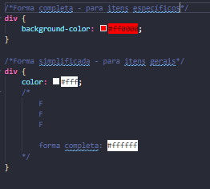
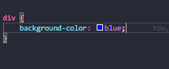

São utilizadas 3 cores primárias:
É utilizada números de 0 a 9,
e, posteriormente, letras de 'a' até 'f'.
Existem duas formas para utilizar cores em hexadecimal,
com diferença do uso de cada um:

Uma forma que não é bastante utilizada.
Utiliza os nomes das cores, em inglês.
